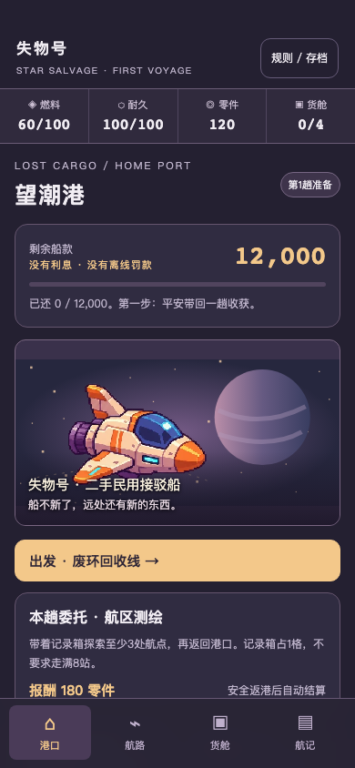

开发自测 453037 · 运行源码 b317c8a
选航点，处理现场，把收获带回港口；卖货、补给和还款由你决定。
打开本机试玩（仅运行服务器的这台 Mac；手机使用交付二维码）
首次建立独立档案，刷新与重开续玩。换浏览器或来源前请在设置导出存档。

TapTap WebView、真实手机锁屏、文件导入导出、发热及趣味待实测。概念原图仍待补，当前含开发后备画面。
连续两趟、存档、账本与脚本策略报告 · 固定包验证